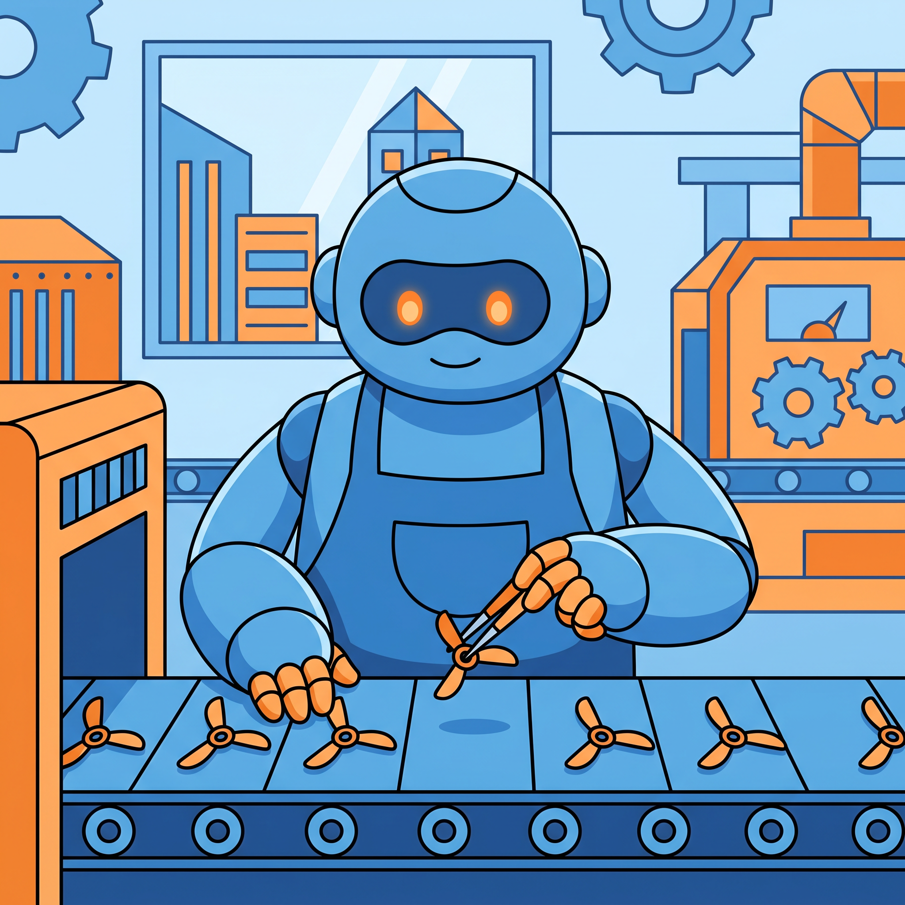
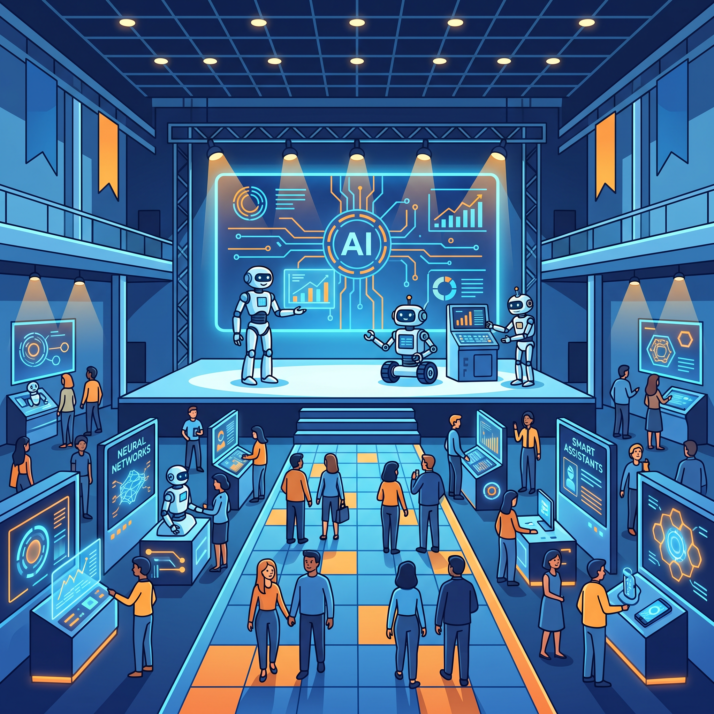
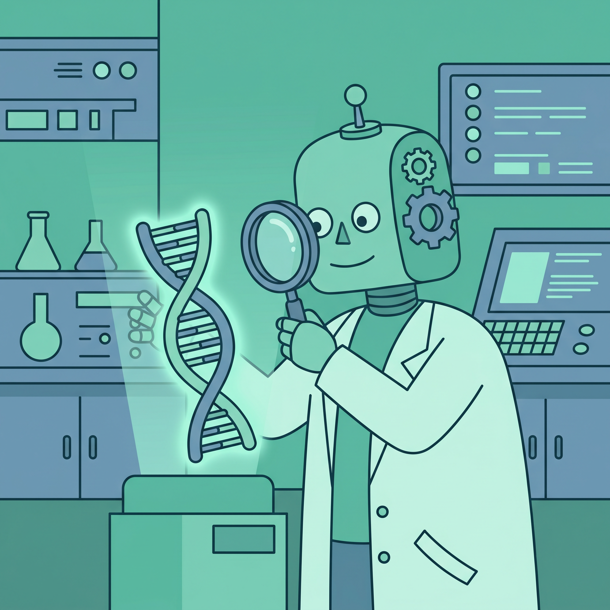
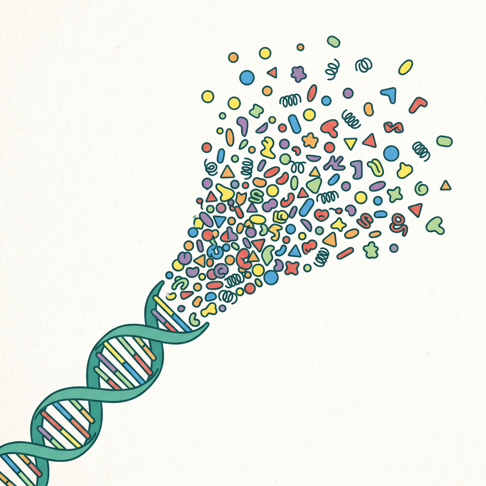
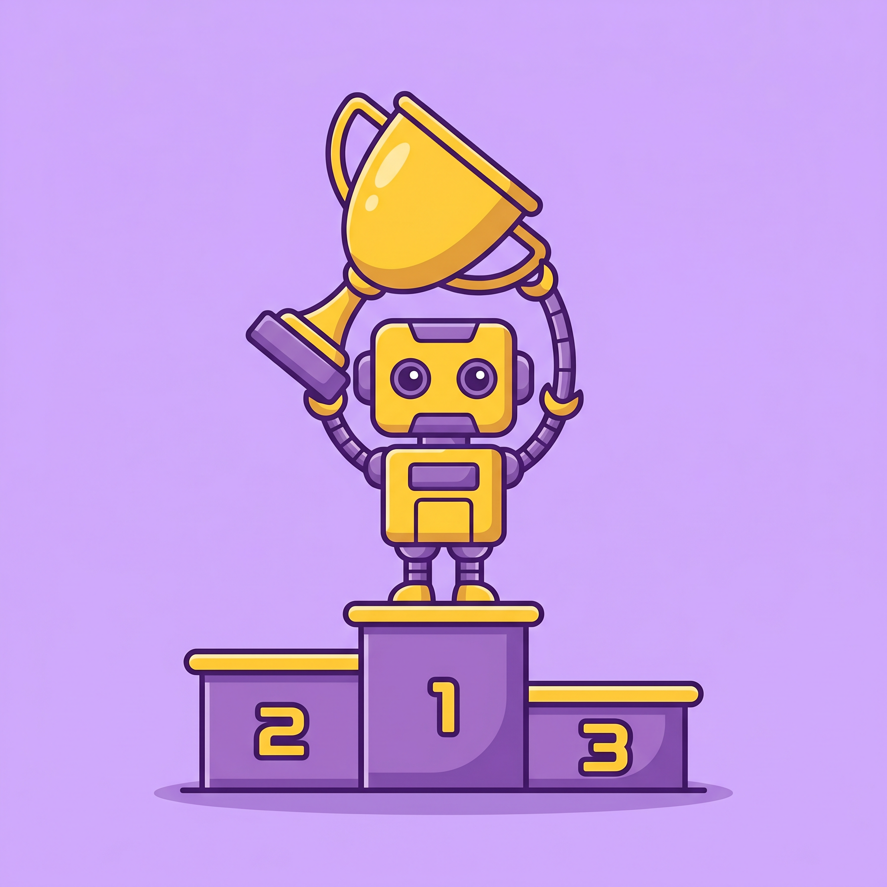
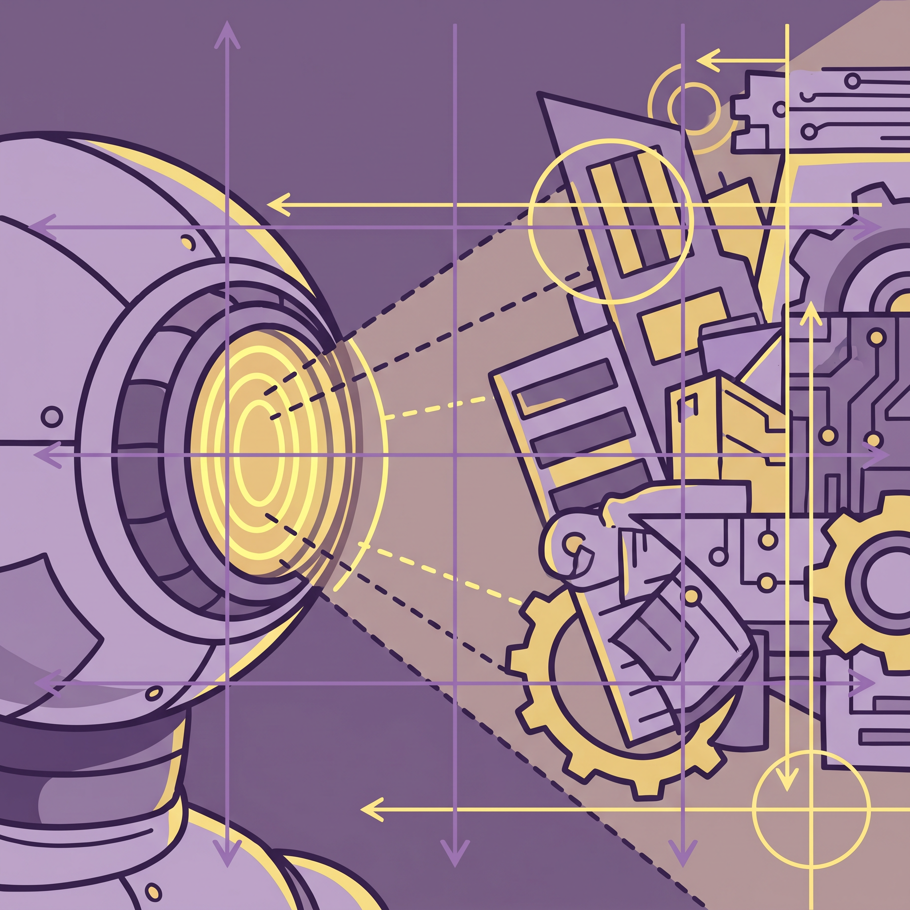
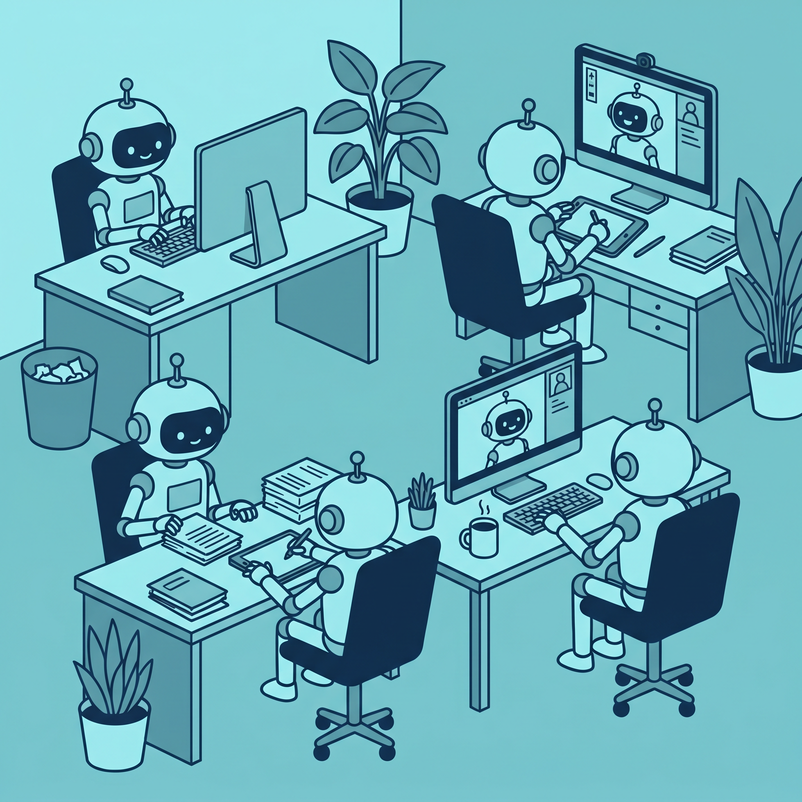

技术落地
人形机器人"小拓"以0.05mm精度在工厂上岗
来源：人民网 · 2026年5月10日
一台身高1.6米的人形机器人"小拓"在工厂中以正负0.05毫米的精度完成无人机桨叶分拣作业。这标志着具身智能从实验室走向真实产线，人形机器人开始胜任高精度的工业操作任务。
查看原文 →具身智能从实验室走向产线，人形机器人以0.05mm精度上岗；Kimi K2.6开源即SOTA，击败GPT-5.4与Claude Opus 4.6；Nature连发两文揭示数千种"暗蛋白"；Agent员工赛道新王者现身。

一台身高1.6米的人形机器人"小拓"在工厂中以正负0.05毫米的精度完成无人机桨叶分拣作业。这标志着具身智能从实验室走向真实产线，人形机器人开始胜任高精度的工业操作任务。
查看原文 →
前海·宝安人工智能产业发展大会以"宝智链新"为主题，十款AI新品集中发布。大会聚焦硬制造与软智能深度融合，展示深圳在智能制造领域的区域创新活力和产业聚集效应。
查看原文 →从具身大脑到产业工厂，具身智能的投资主线已经转变。行业分析认为，具身智能正成为AI在企业服务领域最确定的产业方向，资本和技术力量正在加速向这一赛道汇聚。
查看原文 →智达明远AI创始人刘艳兵亮相第二十八届北京科博会，展示AI营销技术如何帮助企业在AI时代实现增长范式转换，推动营销从经验驱动转向数据智能驱动。
查看原文 →在中国品牌日活动上，艾媒咨询发布AI智能营销白皮书，系统分析AI技术对品牌营销全链路的变革性影响，指出AI正在从营销辅助工具演变为营销决策的核心引擎。
查看原文 →论坛聚焦AI技术深度融入家居生活与全民健康两大方向，探讨"AI赋能美好生活"如何成为行业发展核心趋势，推动消费品牌加速拥抱智能化转型。
查看原文 →
《自然》5月6日发表研究，人类基因组中存在数千种"暗蛋白质"，其编码来自基因组中曾被认为不产生蛋白质的区域。这项发现为疾病研究和药物开发开辟了全新方向。
查看原文 →一位00后用U盘大小的测序仪和几个AI模型，在自家客厅完成基因组测序并破解家族自身免疫疾病之谜。基因测序成本从27亿美元降至个人可负担水平，标志着精准医疗的门槛大幅降低。
查看原文 →
多国顶尖科研团队在《自然》发表重磅研究，在DNA"废料"区域发现超千种全新微蛋白，人类蛋白质图谱将迎来史无前例的大幅改写，对生命科学研究具有深远意义。
查看原文 →• LeRobot - HuggingFace开源具身智能机器人学习框架 [GitHub] | [HuggingFace]
•蛋白质结构预测 Protenix - 开源蛋白质结构预测工具 [GitHub] | [HuggingFace]
• ESM-2 - Meta开源蛋白质语言模型 [GitHub] | [HuggingFace]
• OpenMart - 开源AI营销数据分析平台 [GitHub]
研究人员提出"不可压缩知识探针"评测框架，仅通过黑盒API调用就能逆向估算大模型的参数规模。这一方法让模型透明度问题有了全新解决思路，在社区引发广泛讨论。
查看原文 →
月之暗面开源KimiK2.6模型，成为全球开源最强代码模型，击败GPT-5.4和Claude Opus 4.6。支持连续编码12小时、一个提示词并行跑300个Agent，代码能力达到新高度。
查看原文 →
DeepSeek推出视觉原语思考框架，通过空间原语解决多模态大模型在密集场景中的注意力漂移问题。该方法让模型能精准定位和描述视觉元素，开创多模态空间推理新范式。
查看原文 →英矽智能发布制药行业首个基于Agent-Guard架构的自主化实验室操作系统LabClaw，专为全自动化实验室设计，推动药物研发从被动执行迈向自主决策。
查看原文 →彩讯股份在2026移动云大会发布Rich AIBox企业级智能体平台Nexus版本，从单一工具平台升级为企业级协作伙伴，语音智能体Voice Agent已在多行业规模化落地。
查看原文 →
AI Agent员工赛道持续升温，新玩家凭借更强的自主决策和任务执行能力脱颖而出。AI智能体正在从概念验证进入真实企业岗位替代阶段，成为2026年最火的AI应用方向之一。
查看原文 →• KimiK2.6 - 月之暗面开源最强代码模型 [GitHub] | [HuggingFace]
• DeepSeek-VL2 - DeepSeek多模态视觉语言模型 [GitHub] | [HuggingFace]
• OpenHands - 开源AI Agent编码平台 [GitHub]
• Dify - 开源LLM应用开发平台 [GitHub] | [HuggingFace]